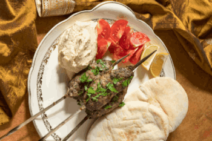

Kofta Recipe
Description
Ah, kofta — those little meatballs that everyone pretends are exotic until you realize they're basically just... meatballs. Seasoned ground meat shaped into balls or logs, grilled or fried until they're "perfectly tender," which is code for "cooked enough that you won't get food poisoning."
This Middle Eastern classic is the go-to for when you want to feel worldly while essentially making glorified hamburger patties. Sure, you'll add some spices and act like you're channeling your inner chef, but let's be honest — you're just rolling meat around in your hands and hoping for the best.
Ingredients
- 500g ground beef or lamb (or whatever's on sale, because we're being "practical")
- 1 medium onion, finely chopped (prepare to cry, literally)
- 3 cloves garlic, minced (the universal "I'm cooking something fancy" ingredient)
- ¼ cup fresh parsley, chopped (or that wilted bunch you forgot about)
- 2 tablespoons breadcrumbs (from that stale bread you refuse to throw away)
- 1 egg (the binding agent that holds your culinary dreams together)
- 1 teaspoon ground cumin (because apparently this makes it "authentic")
- 1 teaspoon ground coriander (you probably don't know what this tastes like, but it's on the recipe)
- ½ teaspoon cinnamon (yeah, cinnamon in meat — just go with it)
- ½ teaspoon paprika (for that reddish color that screams "I tried")
- 1 teaspoon salt (or just dump it in until it "feels right")
- ¼ teaspoon black pepper (because pepper goes on everything, apparently)
- 2 tablespoons olive oil (for cooking, not for impressing anyone)
Steps
- In a large bowl, combine the ground meat, chopped onion, garlic, and parsley. (Yes, you're basically making a meat salad. Embrace it.)
- Add the breadcrumbs, egg, and all the spices. Mix everything together with your hands because utensils are for quitters. (Pro tip: This is messy. Accept your fate.)
- Keep mixing until everything is well combined and the mixture holds together. If it's too wet, add more breadcrumbs. If it's too dry, add another egg. (Welcome to cooking: where everything is made up and the measurements don't matter.)
- Wet your hands and shape the mixture into small balls or oval patties. Make them about the size of a golf ball, or whatever size makes you feel accomplished.
- Heat olive oil in a large skillet over medium heat. (Don't burn the oil. That's not the kind of smoky flavor we're going for.)
- Cook the kofta for about 4-5 minutes on each side, turning them carefully. They should be golden brown and cooked through. (Translation: cook them until they're not pink inside and you stop panicking about food safety.)
- Remove from heat and let them rest for a minute. Serve with rice, bread, or just eat them with your hands while standing in the kitchen. (We don't judge here. Much.)